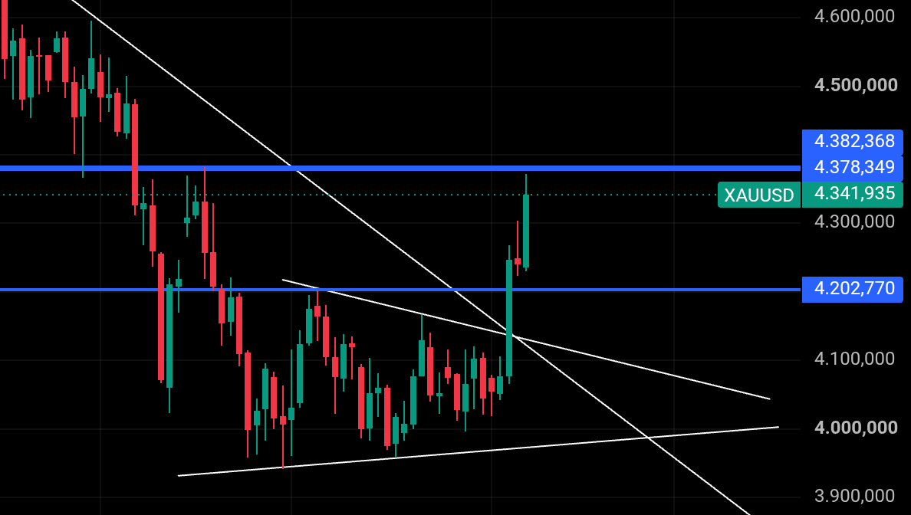

El oro al alza: Por qué ha subido más de un 6% esta semana
Publicado el 8 de agosto de 2026
El mercado de los metales preciosos ha vivido unos días verdaderamente intensos. En esta primera semana de agosto de 2026, la cotización del oro ha protagonizado un rally excepcional, registrando una subida semanal superior al 6% que vuelve a colocar al metal en el centro de todas las miradas.
Pero, ¿qué hay detrás de este repentino impulso? Lejos de deberse a un único motivo, la subida responde a una combinación perfecta de datos económicos preocupantes, movimientos clave en los gráficos de precios, tensiones en el mercado de divisas y un giro geopolítico clave en Oriente Medio.
1. El gran susto del empleo en Estados Unidos
El detonante fundamental de este repunte lo encontramos en la economía estadounidense. Durante la semana se conocieron los datos oficiales de empleo, y el resultado fue un auténtico jarro de agua fría para los mercados: la economía no solo dejó de crear los puestos de trabajo esperados (la previsión estimaba una creación de 85.000 puestos), sino que registró una contracción de 23.000 empleos, a lo que se sumaron peores cifras en las peticiones semanales de subsidio por desempleo.
Este enfriamiento brusco de la economía hizo cambiar de opinión a los inversores de inmediato. Pasaron de temer que los tipos de interés se mantuvieran altos por miedo a la inflación, a pensar que la Reserva Federal (Fed) tendrá que bajarlos pronto para rescatar a la economía. Para un activo como el oro (que no da intereses ni dividendos), un escenario de tipos más bajos reduce drásticamente el coste de mantenerlo, desatando una oleada de compras.
Por su parte, la tasa de desempleo se redujo de un 4,2% a un 4,1%, lo cual puede parecer contradictorio ya que dicha tasa solo cuenta a las personas que están activamente buscando trabajo. Si miles de trabajadores se desaniman, dejan de buscar empleo o abandonan temporalmente la fuerza laboral, desaparecen de las listas de desempleados. Cuando esto ocurre, la tasa de desempleo baja numéricamente, pero no porque la economía esté creando más puestos de trabajo, sino porque hay menos gente participando en el mercado laboral.
2. Optimismo geopolítico: el Estrecho de Ormuz y las conversaciones EE. UU.-Irán
De forma paralela, el tablero geopolítico experimentó un movimiento que impactó directamente en los mercados financieros. Durante la semana surgieron fuertes expectativas y avances diplomáticos en torno a un posible entendimiento entre Estados Unidos e Irán para normalizar el tráfico y reabrir las rutas de navegación a través del Estrecho de Ormuz.
Esta desescalada provocó una caída drástica en los precios del petróleo (con el crudo cayendo por debajo de los 74 dólares por barril). Al reducirse los temores a una crisis energética global, las presiones inflacionarias se moderaron, lo que disipó los miedos a que los bancos centrales endurecieran aún más su política monetaria, dando oxígeno al mercado del oro y de los bonos.
3. Análisis técnico: el precio rompe barreras
Tras semanas de dudas y de aproximarse peligrosamente al nivel psicológico de los 4.000 dólares, los compradores tomaron el control total:
- El precio superó con fuerza zonas clave de resistencia.

Evolución técnica y ruptura de niveles clave en la cotización del oro (XAU/USD).
4. El factor internacional: la presión del yen japonés
A todo lo anterior se le sumó un invitado clave: el yen japonés.
Las tensiones en el mercado de divisas, los intentos por fortalecer la moneda de Japón y el cierre de grandes operaciones financieras internacionales generaron un terremoto en las monedas del mundo. Esto debilitó de forma general al dólar estadounidense, lo que abarató automáticamente el precio del oro para el resto de compradores internacionales.
Conclusión
Con esta subida de más del 6% en apenas una semana, el oro demuestra una vez más por qué es un activo refugio clave en tiempos de cambios. La combinación de un mercado laboral estadounidense muy débil, la distensión en el Estrecho de Ormuz, la caída del dólar, la ruptura de niveles técnicos importantes y las turbulencias monetarias han creado el escenario ideal para que el metal precioso se mueva al alza en este arranque de agosto de 2026.